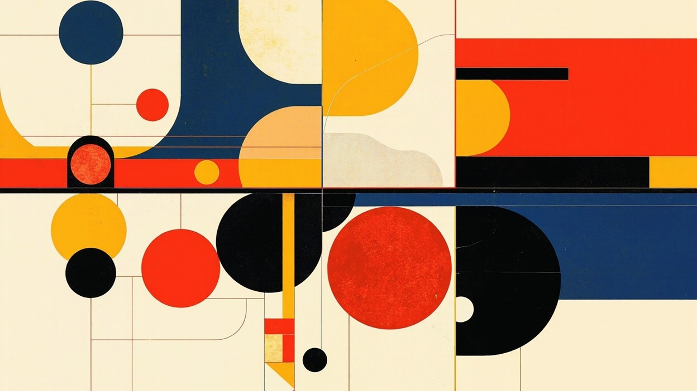
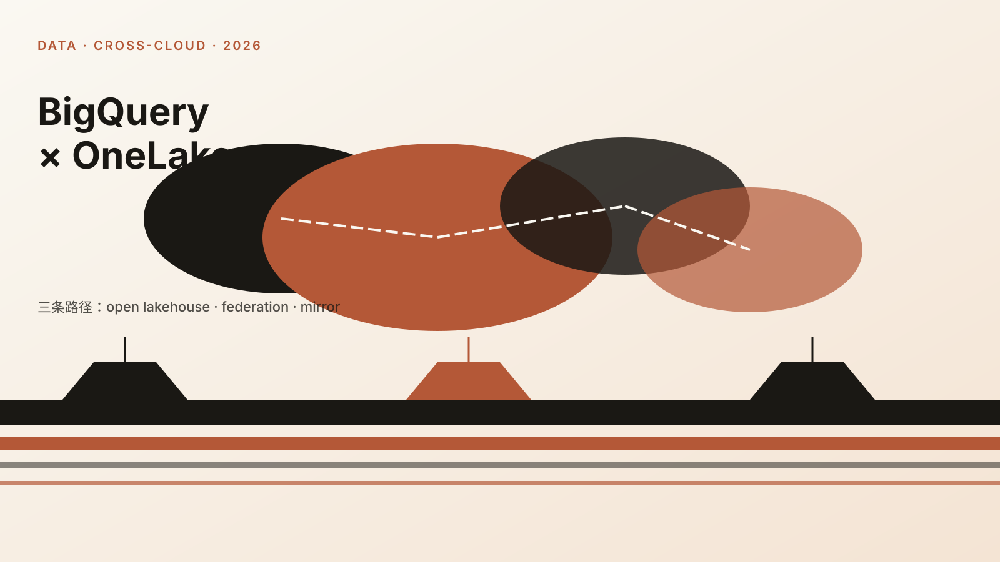
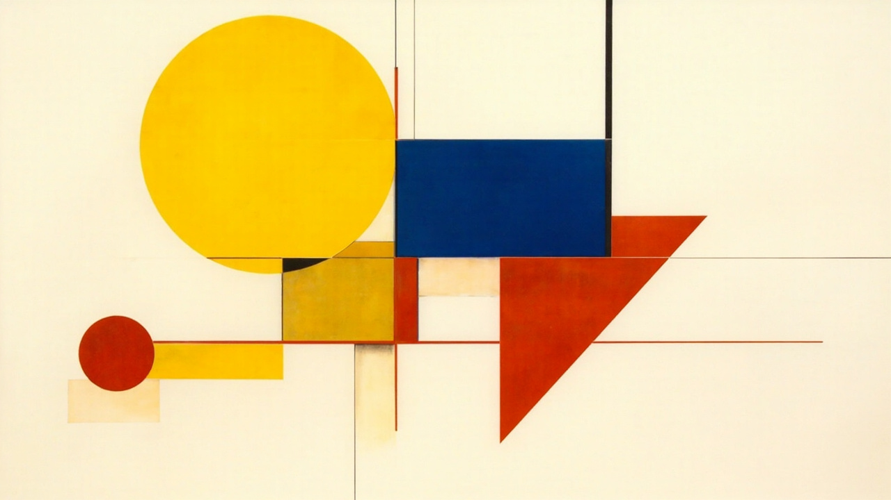
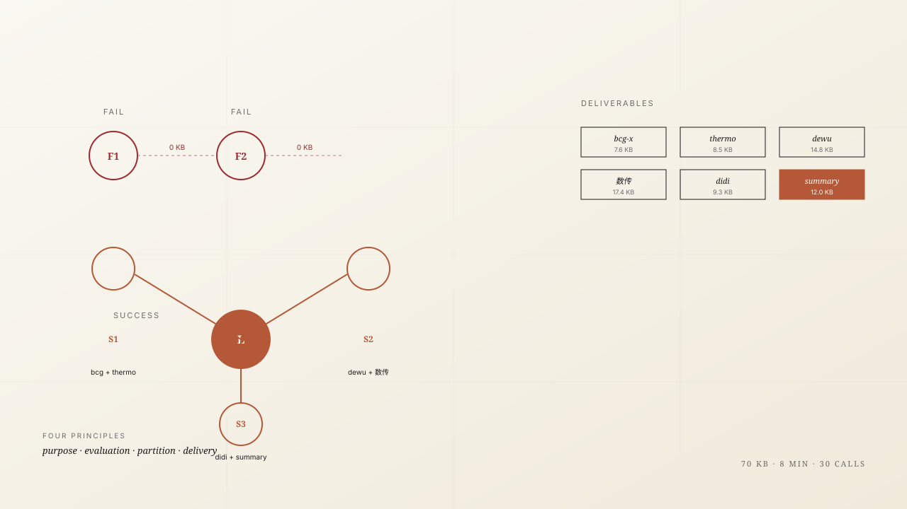

Essays
karpathy/autoresearch：3 文件 + 1 agent = 100 实验/晚。
630 行 Python 教了科研范式转变。agent 编辑 train.py、跑固定 5 分钟、比较 val_bpb、keep / discard。一晚 100 个实验，~12% 命中率。
Copilot Studio × Teams / Outlook: making GenAI actually land on the frontline.
Series #3. Four agents, three fallbacks, two integration paths. Why entry point + real data + observability is the last mile from PPT to production.

Power BI DirectLake × Power Apps/Automate: when data can act for itself.
Series #2. Three production scenarios — on-site pricing approval (1-2 days → 30 min), auto-launch reports, GMV anomaly alerts. One semantic model, four consumers.

当 Google BigQuery 遇上 Microsoft OneLake：跨云数据湖的三条路径。
Series #1. open lakehouse · federation · mirror — 三个层级，三种成本曲线，三种治理哲学。决策点不在技术，在你的数据成熟度。

长鑫存储 (CXMT) IPO 估值：3 年 5 倍涨幅之后, 半导体国产替代还剩多少 beta?
688825 IPO 解读 + DRAM 周期位置 + 国家集成电路三期 3440 亿注资传导链。beta 是政策, alpha 是工艺良率爬坡。

从 NLP 工程师到 GenAI 产品经理：一份 5 年的转岗手记。
不是"学 AI" — 是"换战场"。语言学出身 → 数据科学 → GenAI 全栈 → 产品。中间 3 次失败的转型, 2 次成功的, 全记下来。

LLM as Wiki: Karpathy 的 idea file 让我重写了整个笔记系统。
从 Notion 迁移到 Markdown + Obsidian。LLM 不写, LLM 检索, 你写。AI 不是替你思考, 是放大你的注意力。

Wall Street 13F Q2 2026：5 个 hedge fund 在偷偷买什么?
13F 是公开但没人读的数据。Burry 加仓英伟达, Dalio 砍中概, Tiger Global 重仓 AI infra。从持仓变动读宏观意图。
周期与人性: 朱格拉周期的第 4 次轮回, 我们在哪一格?
10 年长周期的 4 个阶段: 复苏-繁荣-衰退-萧条。当下 2026 是繁荣末段还是衰退初段? 答案藏在资本支出 / 信贷 / 库存的剪刀差。
价值投资 + 量化因子：格雷厄姆 2.0 是不是更好的 alpha?
把巴菲特 + Munger 的 5 大定性原则, 翻译成 7 个可量化因子。低 PE + ROIC + 护城河 + 管理层, 但权重怎么设?
RAG vs AutoRAG: 为什么 AutoRAG 还是没赢过手工调?
实测 5 个 AutoRAG 框架在金融文档场景。AutoRAG 在通用场景赢, 在垂直领域输。原因: 数据偏置 vs 业务偏置。

Two failures and one honest win: 4 prompt-engineering principles for multi-agent work
0 字节 → 70 KB 的 8 分钟。两次 0 产出 + 一次成功案例。4 个 prompt 原则: 单一目的 / 独立考核 / 不同事情 / 独立 deliver。